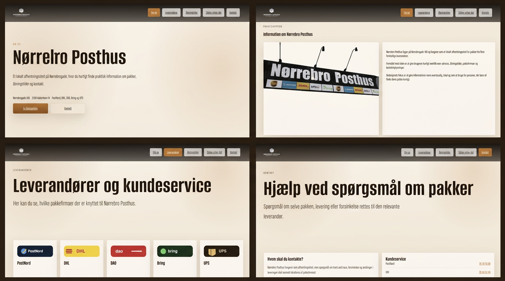

Projekt · Proces · Refleksion
I dette tema redesignede vi hjemmesiden for Nørrebros Posthus. Målet var at skabe et mere moderne, brugervenligt og visuelt sammenhængende website. Vi arbejdede både med struktur, design og funktionalitet, og jeg var med til at udvikle en ny digital identitet, der passede til stedets atmosfære og målgruppe.
Her er linket til min aflevering:
Se min Tema 05 aflevering
Her er et screenshot af min løsning.

Vi arbejdede i grupper, hvor vi brugte en fælles to‑do‑liste, planlægning og løbende koordinering for at holde styr på opgaverne. Vi brugte Figma rigtig meget til at udvikle wireframes, moodboards, UI‑elementer og det endelige redesign. Undervejs byggede vi siden op i HTML og CSS, og vi brugte JavaScript til at skabe interaktive elementer og forbedre brugeroplevelsen. Vi lærte at samarbejde struktureret, dele ansvar og arbejde effektivt som et team.
Jeg lærte, hvor vigtigt det er at kombinere design, funktionalitet og samarbejde. Temaet gav mig erfaring med at arbejde professionelt i en gruppe, planlægge et større projekt og bruge JavaScript til at skabe dynamik på en hjemmeside. Det var et tema, hvor jeg virkelig kunne mærke min udvikling både teknisk og i forhold til teamwork.